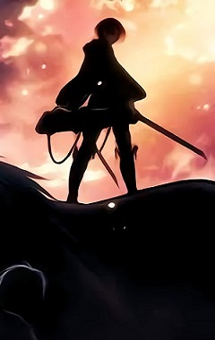
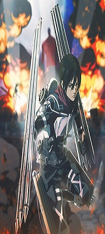

Shingeki no kyojin es un anime catalogado como "el mejor anime de la historia" por muchos de sus seguidores, ellos afirman que probablemente no vaya a existir otro anime similar que les genere tanta emocion y aparte que tenga esa trama tan interesante y bien creada. Es Un mundo donde criaturas humanoides cuyo tamaño alcanza hasta lo 15m que en general parecen burlas deformes de los seres humanos, devoran a los humanos hasta el borde de la extinción sin ningún motivo o razón aparente. Los únicos supervivientes viven en un gran territorio, completamente rodeado por una inmensa muralla que alcanza los 50m, siendo al mismo tiempo su salvación y prisión, mas allá solo hay titanes y se considera básicamente un suicidio ir mas allá del gran muro.

